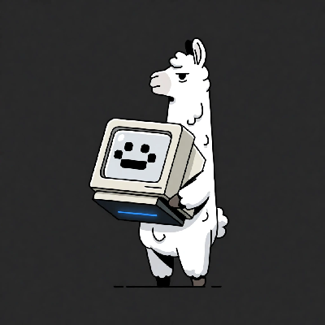
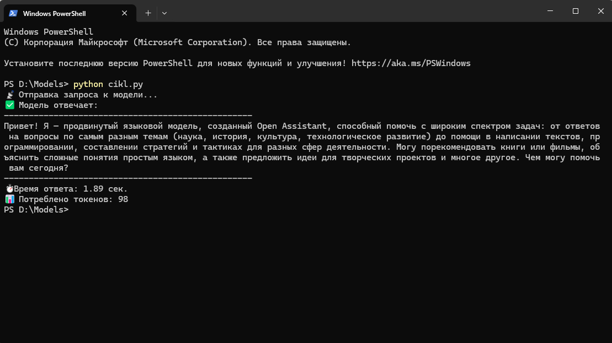

Дисклеймер: Я не программист и не сисадмин. Весь этот путь я проделал с ИИ-ассистентом, который объяснял мне каждый шаг. Если получилось у меня — получится и у вас.
[ ПОСТАНОВКА ЗАДАЧИ ]
Цель: за один вечер скачать, установить и запустить собственную нейросеть.
Без интернета. Без цензуры. Полностью на своём железе.
Результат превзошёл ожидания: модель работает быстро, а Python-обвязка открыла путь к автономным экспериментам.
[ ЧТО ВАМ ПОНАДОБИТСЯ ]
- Видеокарта NVIDIA с 8+ ГБ видеопамяти (у меня RTX 3060 Ti).
- Желание разобраться и немного терпения.
- ИИ-ассистент под рукой (Claude, ChatGPT, Gemini — любой). Он сэкономит вам часы гугления.
[ ШАГ 1: УСТАНОВКА OLLAMA ]
Ollama — это среда запуска, которая позволяет скачивать и запускать языковые модели одной командой.
- Скачайте установщик с официального сайта ollama.com.
- Запустите и установите, как обычную программу.
- После установки Ollama будет висеть в фоновом режиме. Всё.
[ ШАГ 2: ВЫБОР МОДЕЛИ — МОЯ БОЛЬ ]
Моя логика была простой: «Чем больше параметров — тем умнее». Я скачал модель на 14 миллиардов параметров.
Она работала. Но отвечала слишком долго. Это было невыносимо.
Вывод для вас:
- Если у вас 8 ГБ VRAM — берите модели 7B (7 миллиардов параметров). Они влезают полностью и работают быстро.
- Если 12+ ГБ VRAM — можно пробовать 13B-14B, но с запасом по памяти всё равно лучше 7B.
Для своих экспериментов я остановился на русскоязычной 7B-модели без цензуры в формате GGUF.
[ ГДЕ ВЗЯТЬ МОДЕЛЬ ]
Модели скачиваются с huggingface.co — это крупнейший репозиторий бесплатных открытых моделей. Там тысячи вариантов под любые задачи.
Модели в формате GGUF (Guided GNU Unified Format) легко загружаются в Ollama одной командой через командную строку:
ollama run hf.co/{автор}/{название-модели}:{квантование}
Пример:ollama run hf.co/bartowski/qwen2.5-7b-uncensored-ru-GGUF:Q4_K_M
Здесь Q4_K_M — это тип квантования (сжатие модели для экономии памяти). Для 7B-моделей это оптимальный баланс качества и скорости.
[ НА ЧТО ОБРАТИТЬ ВНИМАНИЕ ПРИ ВЫБОРЕ ]
- Размер: 7B для 8 ГБ VRAM.
- Язык: если собираетесь дообучать модель на русском языке — ищите модели с пометкой «ru» или «russian tuned».
- Цензура: берите «uncensored» или «abliterated», если не хотите ограничений.
[ ШАГ 3: НАСТРОЙКА PYTHON ДЛЯ РАБОТЫ С МОДЕЛЬЮ ]
Ollama даёт API, через которое можно общаться с моделью из кода на Python. Это открывает безграничные возможности для автоматизации.
Установка библиотек:
🐍 УСТАНОВКА PYTHON (нажми, чтобы развернуть)
Python — это язык программирования, через который мы будем общаться с моделью. Если он у вас уже установлен — пропустите этот шаг.
Как установить:
- Зайдите на официальный сайт python.org/downloads.
- Скачайте установщик для вашей системы (Windows, macOS, Linux).
- Важно: на первом экране установки поставьте галочку «Add Python to PATH». Без этого команды Python не будут работать из терминала.
- Нажмите «Install Now» и дождитесь окончания установки.
Проверка установки:
Откройте терминал (Win+R → cmd → Enter) и выполните:
python --versionЕсли вы увидели Python 3.x.x — всё готово. Если появилась ошибка — Python не добавлен в PATH, переустановите его с галочкой.
Дополнительно: pip
pip — это менеджер пакетов Python. Он устанавливается автоматически вместе с Python. Проверьте его:
pip --versionЧерез pip мы будем ставить все библиотеки для работы с моделью.
📦 УСТАНОВКА БИБЛИОТЕК PYTHON (нажми, чтобы развернуть)
Для работы с моделью через код понадобится несколько библиотек. Откройте терминал (командную строку) и по очереди выполните эти команды:
# 1. Основная библиотека для HTTP-запросов к Ollama API
pip install requests
# 2. Работа с JSON (обычно встроена, но лучше проверить)
pip install json5
# 3. Библиотека для даты и времени (пригодится для логов)
pip install datetime
# 4. Регулярные выражения — для парсинга ответов модели
pip install re
# 5. NumPy — работа с массивами чисел (понадобится для обработки данных)
pip install numpyЧто делает каждая библиотека в проекте:
- requests — отправляет HTTP-запросы к Ollama API. Через неё модель получает промпт и возвращает ответ.
- json / json5 — разбирает JSON-ответы от модели. Ollama возвращает данные в JSON-формате, их нужно парсить.
- datetime — проставляет временные метки в логах. Пригодится, когда модель пишет дневник экспериментов.
- re — регулярные выражения. Нужны, чтобы вытаскивать из ответа модели конкретные части (например, оценку Судьи от 1 до 5).
- numpy — работа с числовыми массивами. Пригодится позже, когда модель начнёт анализировать данные телеметрии или результаты тестов.
Важно: все эти библиотеки бесплатны и занимают минимум места. Установка займёт не больше минуты.
📶 ПРОВЕРКА СВЯЗИ: БАЗОВЫЙ СКРИПТ (нажми, чтобы развернуть)
Создайте текстовый файл и переименуйте его в test_ollama.py , откройте через блокнот и вставте туда этот код.
import requests
import json
# Адрес Ollama API (работает локально)
url = "http://localhost:11434/api/generate"
# Данные запроса
data = {
"model": "qwen2.5:7b", # замените на название вашей модели
"prompt": "Привет! Расскажи, кто ты и что умеешь.",
"stream": False, # False — получить ответ целиком
"options": {
"temperature": 0.7, # креативность: 0 = строго, 1 = свободно
"num_predict": 200 # максимальная длина ответа в токенах
}
}
# Отправляем запрос
print("📡 Отправка запроса к модели...")
response = requests.post(url, json=data, timeout=60)
# Разбираем ответ
if response.status_code == 200:
result = response.json()
print("✅ Модель отвечает:")
print("-" * 50)
print(result["response"])
print("-" * 50)
print(f"⏱ Время ответа: {result.get('total_duration', 0) / 1e9:.2f} сек.")
print(f"📊 Потреблено токенов: {result.get('eval_count', 0)}")
else:
print(f"❌ Ошибка {response.status_code}: {response.text}")
Откройте командную строку , введите команду "python" и укажите путь к файлу по примеру : "python D:\Папка\test_ollama.py"
Ожидаемый результат:
Если связка Python + Ollama работает, вы увидите осмысленный ответ модели с указанием времени и количества токенов.
Частая ошибка: если скрипт ругается на connection refused — Ollama не запущена. Откройте её через меню Пуск или выполните в терминале ollama serve.

[ ШАГ 4: ЧТО ДАЛЬШЕ ]
С этого момента у вас есть свой личный ИИ, который:
- Работает без интернета.
- Не передаёт ваши данные сторонним серверам.
- Не имеет встроенной цензуры (если вы выбрали такую модель).
- Может быть дообучен под ваши задачи через LoRA.
[ РЕЗУЛЬТАТЫ И ПЛАНЫ ]
Я уже написал на Python целую экосистему для своей модели.
Она участвует в логических дуэлях («Кремниевый ринг»), оценивает себя сама через второго агента-Судью, а ценные результаты сохраняет в файл для будущего дообучения. Но это уже тема для отдельного поста.
Вывод: Локальный ИИ — это не магия. Это инструмент, который можно собрать за один вечер. И он уже работает в моей лаборатории.
⟵ Back